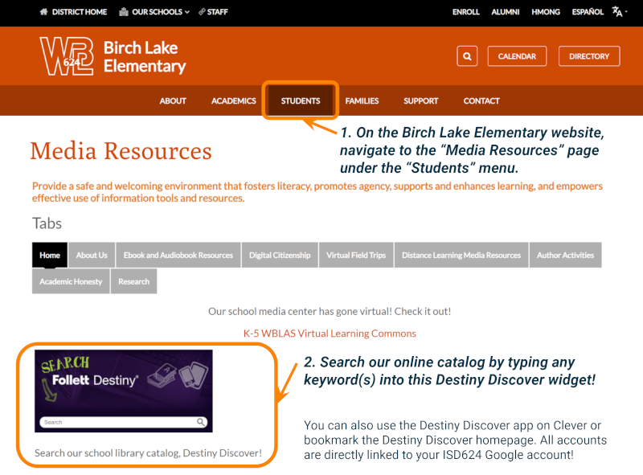
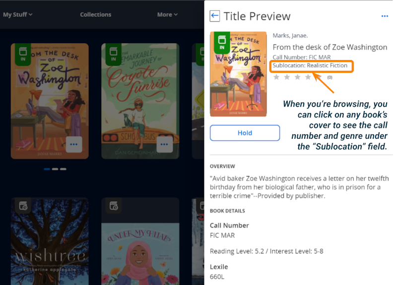
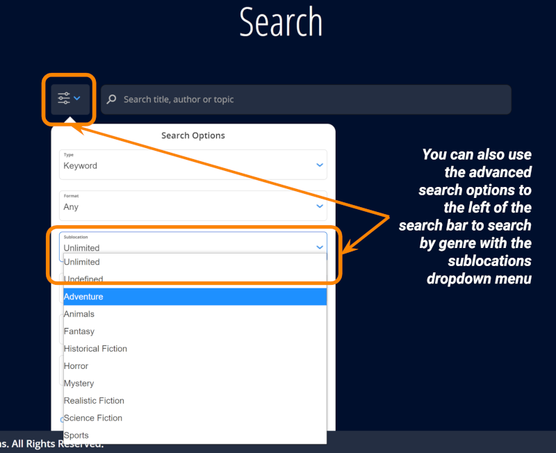
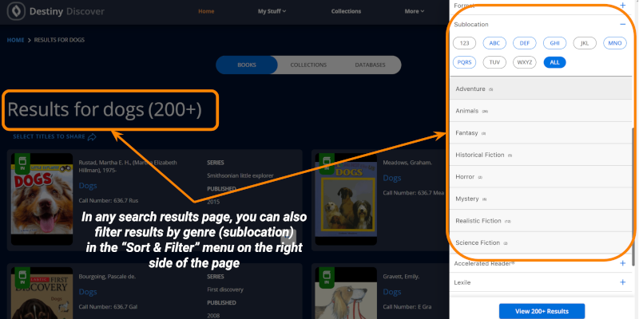

LOCATING BOOKS BY GENRE IN DESTINY DISCOVER
Follett's Destiny Discover (or "Destiny") is an online library catalog where students and staff at Birch Lake can search all of the books we have in the media center, find new books to read, and access digital content.
This page is a guide for how to locate the genre of books you are interested in, and search our library catalog by genre.
Accessing Destiny Discover
First, to access Destiny online, go to the Birch Lake Elementary School website and look for the "Students" menu at the top middle area of the page. Then select the "Media Resources" page from the dropdown list. From here, you can use the purple Destiny widget on the left side of the page to search any keyword in the online catalog.

If you would like, you can also access Destiny Discover by opening the app in your Clever portal or using this direct link. You log into Destiny with your district Google account.
Locating the Genre [Sublocation] of Books
While you are browsing the books available in Destiny Discover, you can click the cover image of any book to bring up a "Title Preview" sidebar. The Title preview sidebar shows the most important information about a book, including its call number and sublocation. In Destiny, the sublocation of a book is its genre. This is easy to remember if you think about how media center separates genres by different color-coded shelf locations!

Sorting and Filtering by Genre [Sublocation]
You can also search books by genre by clicking on the magnifying glass icon at the top of any page to access the search page, and using the advanced search options menu to the left of the search bar to search by genre using the sublocations dropdown menu.

In the results page of any search, you can also filter results by genre (sublocation) in the "Sort & Filter" menu on the right side of the page. These search and filtering strategies will help you narrow down your search to particular types of stories.

More Help with Destiny
If you are unfamiliar with how to use Destiny Discover, it may help to veiw the video below (available with closed captions) for a basic tutorial. While the appearance of Destiny has changed since the making of the video below, it is still helpful to understand the features of Destiny. If you need more help with Destiny Discover, please let Ms. Katie know anytime for access to a written tutorial or a live demonstration.